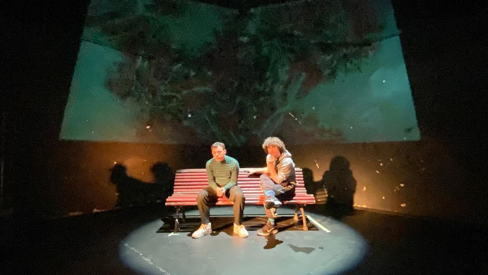

>> Introduction to Video Game Narratives - Final Degree Project
My TFG focuses on video game narrative, exploring from its theoretical foundations to its practical
application in pedagogical contexts. This research seeks to generate an introductory contextual and
theoretical framework on the narrative bases of video games. Thus, through its history, context and
form, video game narrative is a dramatic field that is still expanding and of great artistic interest.
What are the bases on which the future of narrative is governed?
This research work is born from the need to understand and shed light on the bases on which it is
governed and its theoretical context, with the main objective of approaching a possible methodology
for video game analysis and creation.
I develop the main concepts of the MDA Framework (Mechanics, Dynamics and Aesthetics) and its impact
on the creation of interactive stories. I explore the similarities between traditional dramaturgy and
video game narrative, highlighting how both fields share narrative structures and character development.
The case study of the main study is the Didascalia V.C. project in collaboration with
the UCM, which applies VR in education, demonstrating the effectiveness of interactive narrative in
pedagogical contexts. In this project, I was able to mentor the development team in relation to the
creation of narratives, presenting a possible structure applicable to the final version of the video game.
The conclusions highlight how technology can foster creative innovation and the importance of narrative
in video games to offer personalized experiences to players. I achieved a final grade of 9.5.
Request full thesis
>> Breaking Hearts - Video game dialogue
In a vibrant world where music is power and rhythm rules all, a young rebel steps onto the stage.
Armed with a sharp tongue, killer dance moves, and an unshakable sense of style, they take on eccentric
rivals in rhythm-based battles. Each opponent brings their own musical genre to the fight
— from synthwave vampires to punk rock werewolves — turning every duel into a high-energy showdown
packed with beats, banter, and musical mayhem.
Read the full story

>> LEFTOVER - Fantastic Animation
In the heart of a gray and desolate village, lives a boy named Yago. He is a shy nine-year-old boy,
who faces difficulties at school and in his daily life due to personal and social problems.
In the midst of his loneliness, he finds solace in the presence of his pet, his eternal companion
Leftover, a creature built from scrap metal, fragments and limbs of other sea animals.
This is a story that talks about autism during childhood and the difficulties it entails.
Read the full story
>> Across the Cosmos - Comedy & Adventure Miniseries
The story is about Steve, a human astronaut who travels through the universe and visits different
worlds (one for each episode). During each short film, the protagonist will encounter different
creatures and eccentric situations that test his way of seeing the world. However, he will also
encounter a recurring setback: his left arm spontaneously throws a wafer at his own face.
Read pilot script

>> El Chico Trizas – Fantastic Realism
My knowledge of adaptation led me to create a play based on Sarah Kane's "Psychosis of 4.48".
In this project, in addition to analyzing and rewriting the original text to give it a completely
new form, I started from the real experience of an acquaintance who had recently gone through a
psychotic break. One of the main objectives of my staging was to portray a raw and difficult
reality, full of urban references and street characters.
Read adaptation
>> Tres Mujeres – Feminist Poetry
Another of my staging projects is based on the work of “Tres Mujeres” by Sylvia Plath.
In the adaptation that I attach below, from the original text I was able to define and create a
scenography and a narrative design that goes beyond the author's proposal; in addition to carrying
out an exhaustive analysis of the characters and the environment based on personal intuitions.
In this project I emphasize feminism, the figure of women and the different existing motherhoods.
Read project